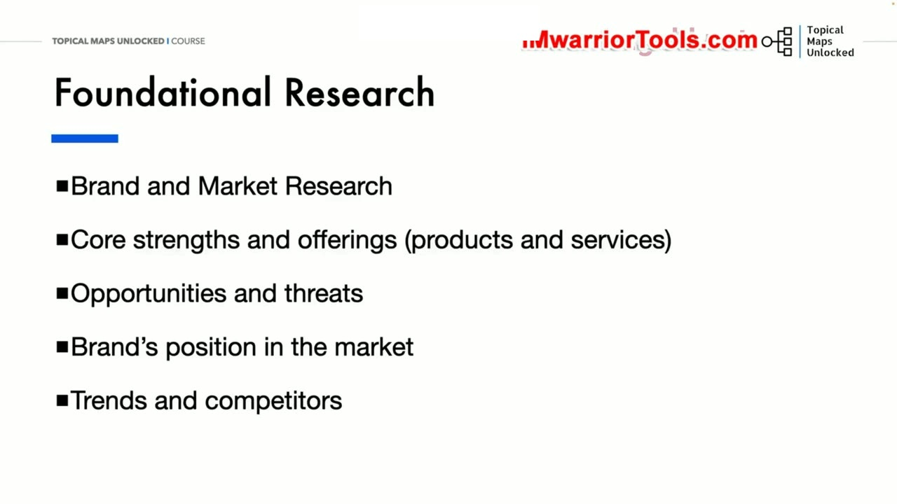
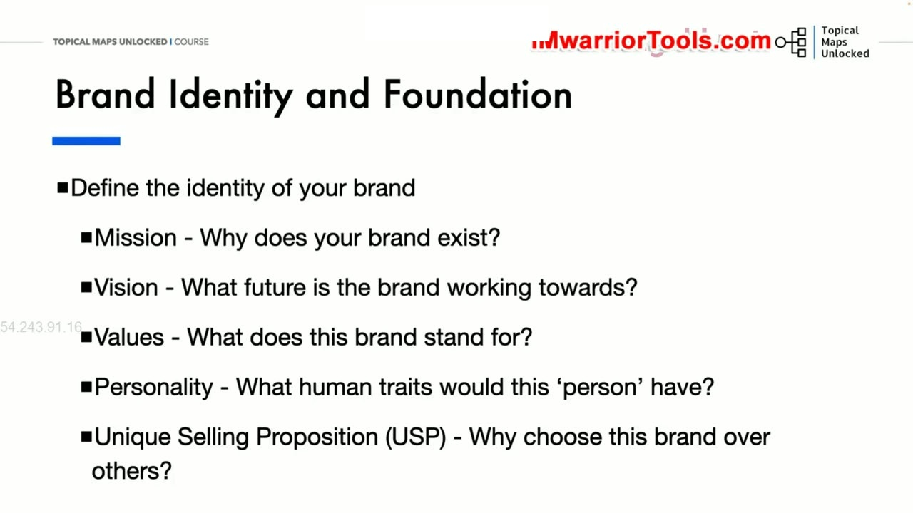
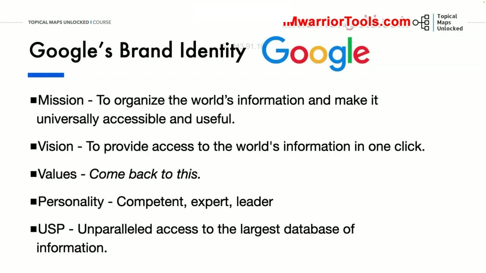
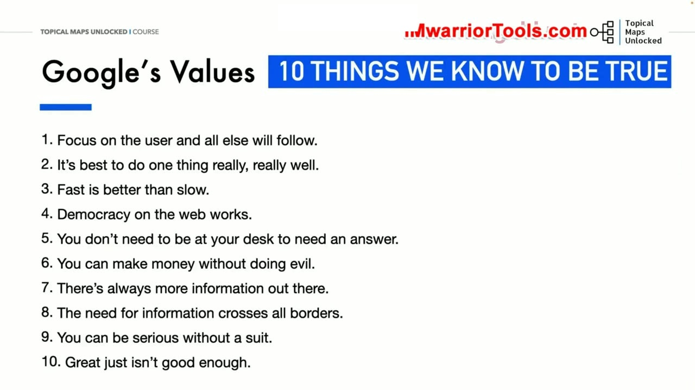
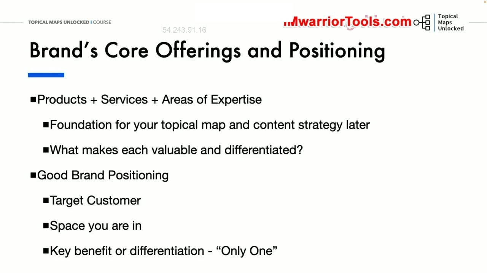
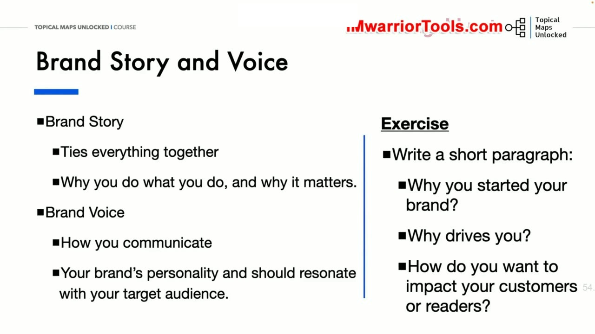
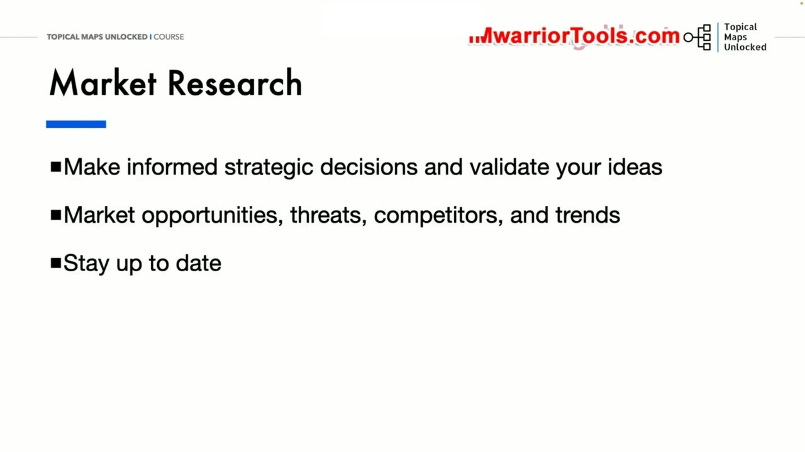
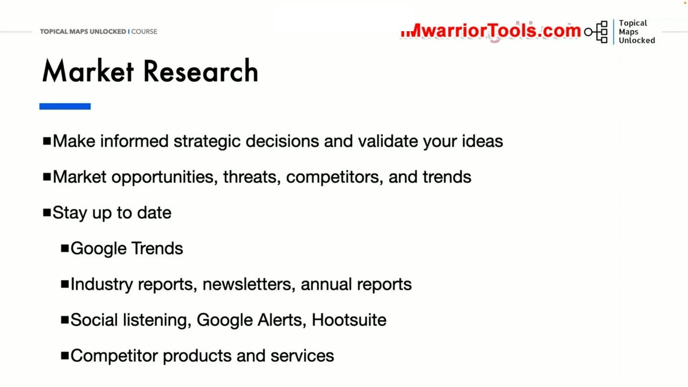

Brand Identity & Market Research
1. Nghiên cứu nền tảng: Xác lập bản sắc và thấu hiểu bức tranh thị trường
Trước khi bắt tay vào việc nghiên cứu từ khóa cụ thể hay vẽ bất kỳ nhánh chủ đề nào trên bản đồ Topical map, bước đi đầu tiên mang tính sống còn là thực hiện Nghiên cứu nền tảng (Foundational Research). Nghiên cứu nền tảng bao gồm hai trụ cột chính: Nghiên cứu nhận diện thương hiệu của chính bạn và Nghiên cứu bối cảnh thị trường xung quanh.
Quá trình này giúp doanh nghiệp trả lời những câu hỏi mang tính cốt tử: Đâu là thế mạnh cốt lõi, các sản phẩm và dịch vụ nổi bật mà bạn cung cấp? Những cơ hội nào đang mở ra và những mối đe dọa tiềm ẩn nào đang rình rập? Vị thế hiện tại của thương hiệu đang ở đâu trong tâm trí khách hàng so với các đối thủ cùng ngành? Và những xu hướng mới nào đang định hình lại hành vi tiêu dùng của thị trường?
Yoyao khẳng định rằng nếu bỏ qua bước nghiên cứu nền tảng này, toàn bộ chiến lược nội dung sau đó sẽ rơi vào tình trạng mất phương hướng, tạo ra những bài viết tuy có thể có lưu lượng truy cập nhưng hoàn toàn lạc lõng với năng lực phục vụ thực tế của doanh nghiệp.

2. Năm yếu tố định hình Nhận diện thương hiệu (Brand Identity & Foundation)
Để định hình bản sắc thương hiệu một cách rõ ràng và truyền cảm hứng, Yoyao phân tích 5 thành tố cấu thành then chốt:
- Mission (Sứ mệnh): Tại sao thương hiệu của bạn tồn tại? Mục đích tối thượng thúc đẩy doanh nghiệp thức dậy và làm việc mỗi ngày là gì? Sứ mệnh giải thích lý do hiện diện của bạn đối với xã hội và cộng đồng.
- Vision (Tầm nhìn): Tương lai mà thương hiệu đang nỗ lực kiến tạo trông như thế nào trong 5 năm, 10 năm hay 20 năm tới? Tầm nhìn là ngôi sao bắc đẩu dẫn đường cho mọi quyết định chiến lược dài hạn.
- Values (Giá trị cốt lõi): Những nguyên tắc đạo đức, niềm tin và chuẩn mực ứng xử mà thương hiệu kiên quyết bảo vệ là gì? Giá trị cốt lõi định hướng cách bạn đối xử với khách hàng, đối tác và nhân viên.
- Personality (Tính cách thương hiệu): Nếu thương hiệu của bạn biến thành một con người bằng xương bằng thịt, người đó sẽ có những phẩm chất tính cách nhân bản nào? Họ là một chuyên gia thông thái, một người bạn chân thành, một người tiên phong táo bạo, hay một người hướng dẫn tận tâm?
- Unique Selling Proposition (USP - Đề xuất bán hàng độc nhất): Tại sao khách hàng phải lựa chọn thương hiệu của bạn mà không phải là bất kỳ ai khác ngoài kia? Điểm khác biệt vượt trội và duy nhất mà chỉ có bạn mang lại là gì?

3. Phân tích ca điển hình: Nhận diện thương hiệu của Google
Để giúp người học dễ dàng nắm bắt cách một tập đoàn hàng đầu thế giới thiết lập bộ nhận diện, Yoyao phân tích cụ thể bản sắc thương hiệu của Google:
- Sứ mệnh (Mission): "Tổ chức thông tin của toàn thế giới và làm cho nó có thể truy cập được ở mọi nơi một cách hữu ích nhất." Một sứ mệnh cực kỳ ngắn gọn, bao quát nhưng định hình toàn bộ các sản phẩm từ Google Search, Maps cho đến Android.
- Tầm nhìn (Vision): Cung cấp quyền truy cập tức thì vào toàn bộ tri thức của nhân loại chỉ bằng một cú nhấp chuột duy nhất.
- Tính cách (Personality): Có năng lực vượt trội, chuyên gia uyên bác, dẫn đầu xu thế công nghệ và luôn đáng tin cậy.
- Đề xuất bán hàng độc nhất (USP): Quyền truy cập vô song vào cơ sở dữ liệu thông tin lớn nhất và chính xác nhất từng được nhân loại tạo ra.
Bản sắc thương hiệu rõ ràng này giúp Google luôn giữ vững được phương hướng nhất quán trong suốt hàng thập kỷ phát triển, không bị chệch hướng trước những trào lưu ngắn hạn.

4. Mười giá trị cốt lõi nổi tiếng của Google: 10 Things We Know to Be True
Yoyao đi sâu vào phân tích bản tuyên ngôn nổi tiếng gồm 10 giá trị cốt lõi của Google mang tên "10 Things We Know to Be True" (10 điều chúng tôi biết là đúng):
- Focus on the user and all else will follow (Tập trung vào người dùng và mọi thứ khác sẽ tự theo sau): Đây là kim chỉ nam tối thượng. Khi trải nghiệm của người dùng được đặt lên hàng đầu, doanh thu và sự thành công sẽ tự khắc đến.
- It's best to do one thing really, really well (Tốt nhất là làm một việc thật sự, thật sự xuất sắc): Google khởi đầu với việc tìm kiếm và tập trung toàn lực để làm cho việc tìm kiếm trở nên hoàn hảo nhất.
- Fast is better than slow (Nhanh thì tốt hơn chậm): Tốc độ tải trang và phản hồi tức thì là yếu tố trải nghiệm then chốt.
- Democracy on the web works (Dân chủ trên web hoạt động hiệu quả): Cơ chế xếp hạng dựa trên việc các trang web liên kết và công nhận lẫn nhau (nền tảng của thuật toán PageRank ban đầu).
- You don't need to be at your desk to need an answer (Bạn không cần phải ngồi tại bàn làm việc mới cần câu trả lời): Định hướng tiên phong cho kỷ nguyên di động và tìm kiếm đa nền tảng.
- You can make money without doing evil (Bạn có thể kiếm tiền mà không làm điều xấu): Tôn chỉ đạo đức trong kinh doanh, không vì lợi nhuận quảng cáo ngắn hạn mà đánh lừa người dùng.
- There's always more information out there (Luôn luôn có nhiều thông tin hơn ở ngoài kia): Động lực không ngừng mở rộng chỉ mục và khám phá các định dạng dữ liệu mới.
- The need for information crosses all borders (Nhu cầu thông tin vượt qua mọi biên giới): Cam kết phục vụ người dùng toàn cầu với mọi ngôn ngữ và nền văn hóa.
- You can be serious without a suit (Bạn có thể làm việc nghiêm túc mà không cần phải mặc vest): Văn hóa sáng tạo, cởi mở và linh hoạt trong môi trường làm việc.
- Great just isn't good enough (Tuyệt vời thôi vẫn là chưa đủ): Luôn luôn đặt ra những tiêu chuẩn cao hơn để vượt qua sự mong đợi của chính mình.

5. Sản phẩm cốt lõi, Lĩnh vực chuyên môn và Định vị thương hiệu vững chắc
Từ nhận diện thương hiệu, bước tiếp theo là xác định cụ thể danh mục Sản phẩm + Dịch vụ + Các lĩnh vực chuyên môn cốt lõi (Areas of Expertise) của doanh nghiệp. Đây chính là chất liệu trực tiếp để xây dựng nền móng cho Topical map và chiến lược nội dung sau này. Mỗi sản phẩm hoặc dịch vụ đều cần làm rõ: Điều gì làm cho nó trở nên có giá trị và khác biệt so với các giải pháp khác trên thị trường?
Một Định vị thương hiệu tốt (Good Brand Positioning) được cấu thành từ 4 câu hỏi rành mạch:
- Target Customer: Ai là khách hàng mục tiêu chính xác mà bạn đang phục vụ?
- Space you are in: Bạn đang hoạt động trong thị trường hoặc phân khúc ngành nghề nào?
- Key benefit or differentiation: Lợi ích cốt lõi hoặc điểm khác biệt lớn nhất mà bạn mang lại là gì?
- The "Only One" statement: Khẳng định vị thế độc nhất: Chúng tôi là thương hiệu duy nhất cung cấp giải pháp X cho đối tượng Y để đạt được kết quả Z.

6. Câu chuyện thương hiệu (Brand Story) và Giọng văn (Brand Voice)
Brand Story (Câu chuyện thương hiệu) là sợi dây vô hình kết nối mọi thứ lại với nhau một cách hài hòa. Nó giải thích lý do sâu xa vì sao bạn làm những việc bạn đang làm, và tại sao điều đó lại quan trọng đối với thế giới bên ngoài. Câu chuyện thương hiệu chân thực giúp khách hàng thấu hiểu động lực khởi nghiệp, các thử thách bạn đã vượt qua và sứ mệnh phụng sự mà bạn đang theo đuổi.
Song hành với câu chuyện là Brand Voice (Giọng văn thương hiệu). Đây là cách thức bạn giao tiếp, ngôn từ bạn lựa chọn và thái độ bạn thể hiện trong mọi bài viết. Giọng văn phải mang tính cách riêng biệt của thương hiệu và phải cộng hưởng mạnh mẽ với đối tượng khán giả mục tiêu của bạn.
Yoyao đưa ra một bài tập thực hành dành cho người học: Hãy tự viết một đoạn văn ngắn trả lời 3 câu hỏi cốt lõi:
- Tại sao bạn bắt đầu xây dựng thương hiệu này?
- Động lực sâu kín nào đang thúc đẩy bạn hàng ngày?
- Bạn mong muốn tạo ra tác động tích cực như thế nào đến cuộc sống của khách hàng hoặc độc giả của mình?

7. Nghiên cứu thị trường (Market Research): Xác thực ý tưởng và phát hiện cơ hội
Sau khi đã làm rõ nội lực thương hiệu, bước tiếp theo là hướng tầm mắt ra bên ngoài thông qua Nghiên cứu thị trường (Market Research). Nghiên cứu thị trường giúp bạn đưa ra những quyết định chiến lược sáng suốt dựa trên dữ liệu thực tế, đồng thời kiểm chứng tính khả thi của các ý tưởng nội dung trước khi đầu tư thời gian và chi phí sản xuất.
Mục tiêu của nghiên cứu thị trường là:
- Xác định các cơ hội thị trường mới nổi chưa có ai khai thác tốt.
- Nhận diện các mối đe dọa cạnh tranh từ những đối thủ hiện hữu hoặc những mô hình kinh doanh mới.
- Thấu hiểu sâu sắc năng lực, ưu điểm và nhược điểm của các đối thủ cạnh tranh trực tiếp.
- Luôn luôn cập nhật các biến động, xu hướng và sự thay đổi trong thị hiếu của người tiêu dùng để không bị tụt lại phía sau.

8. Bốn công cụ và phương pháp theo dõi thị trường thực chiến
Để duy trì việc cập nhật thông tin thị trường liên tục một cách hiệu quả, Yoyao gợi ý 4 phương pháp và công cụ thực tế:
- Google Trends: Công cụ miễn phí tuyệt vời để theo dõi sự gia tăng hoặc sụt giảm mức độ quan tâm của công chúng đối với các chủ đề, nhận diện tính chu kỳ theo mùa và phát hiện những cụm từ khóa đang bùng nổ tìm kiếm.
- Báo cáo ngành, Bản tin chuyên sâu và Báo cáo thường niên (Industry Reports & Newsletters): Đọc các tài liệu phân tích thị trường uy tín từ các hiệp hội ngành nghề và các công ty nghiên cứu để có cái nhìn vĩ mô về dung lượng thị trường và tốc độ tăng trưởng.
- Lắng nghe mạng xã hội (Social Listening): Thiết lập các cảnh báo tự động thông qua Google Alerts hoặc sử dụng các công cụ quản trị mạng xã hội như Hootsuite để theo dõi ngay lập tức mỗi khi tên thương hiệu, tên đối thủ hoặc các từ khóa chủ đề then chốt được thảo luận trên Internet.
- Phân tích sản phẩm và dịch vụ của đối thủ cạnh tranh (Competitor Analysis): Thường xuyên dùng thử sản phẩm, đọc đánh giá của khách hàng về đối thủ để tìm ra những lỗ hổng dịch vụ, từ đó biến chúng thành lợi thế cạnh tranh độc nhất cho thương hiệu của mình.
Việc kết hợp hài hòa giữa bản sắc thương hiệu vững chắc và nghiên cứu thị trường nhạy bén sẽ tạo ra một bệ phóng hoàn hảo cho việc xây dựng bản đồ chủ đề chuẩn xác trong các bài học tiếp theo.

Nguồn và đối chiếu
- Topical Maps Unlocked 2.0 · 02-Brand Identity & Market Research (Video bài học chính).
- Bản tiếng Anh không có video riêng cho bài học này; nội dung đối chiếu trực tiếp từ slide và video chính.